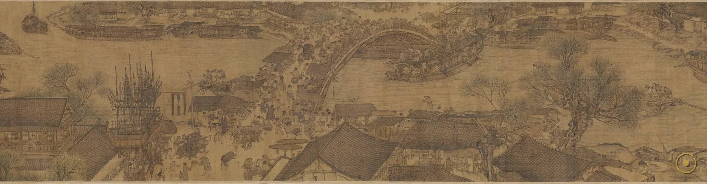
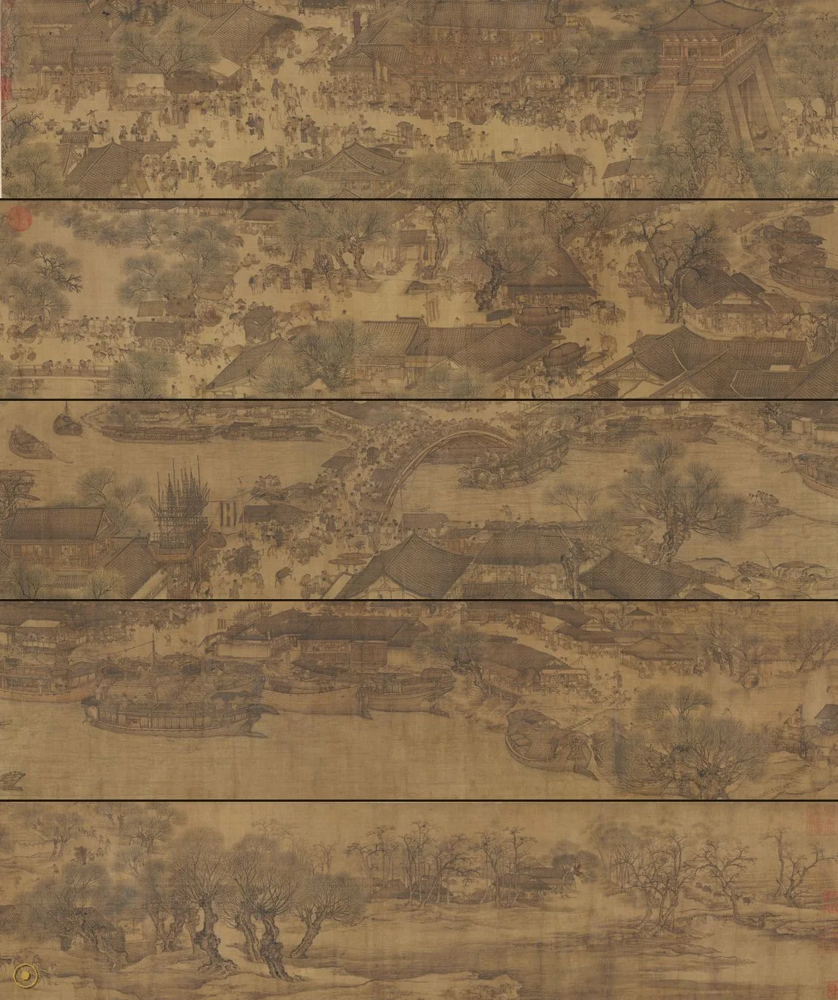
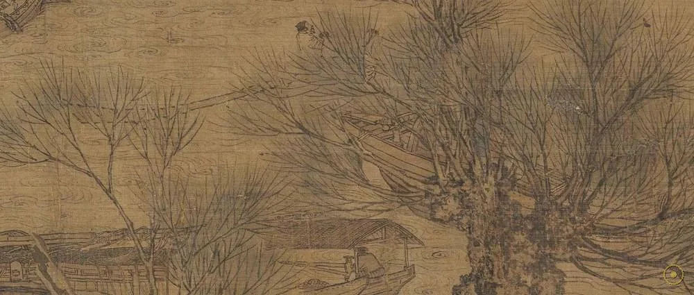
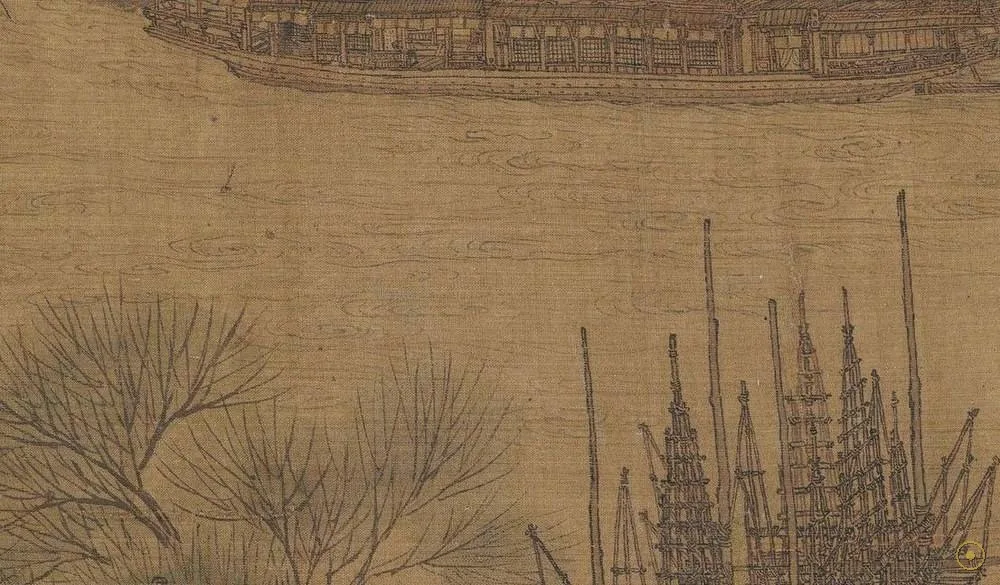
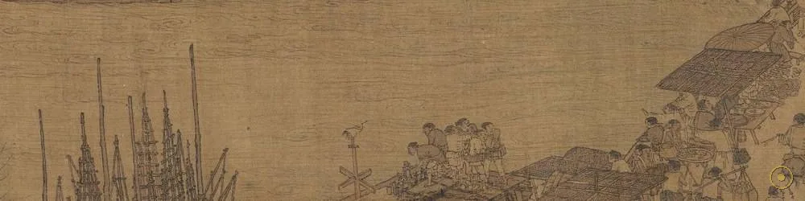
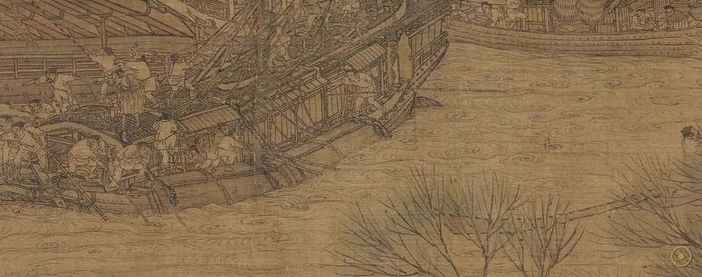
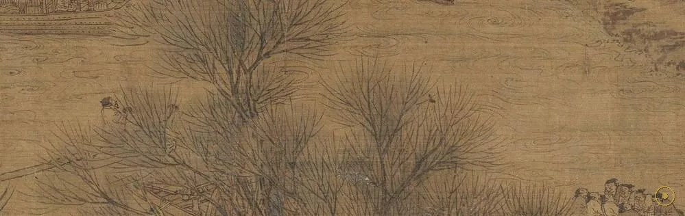
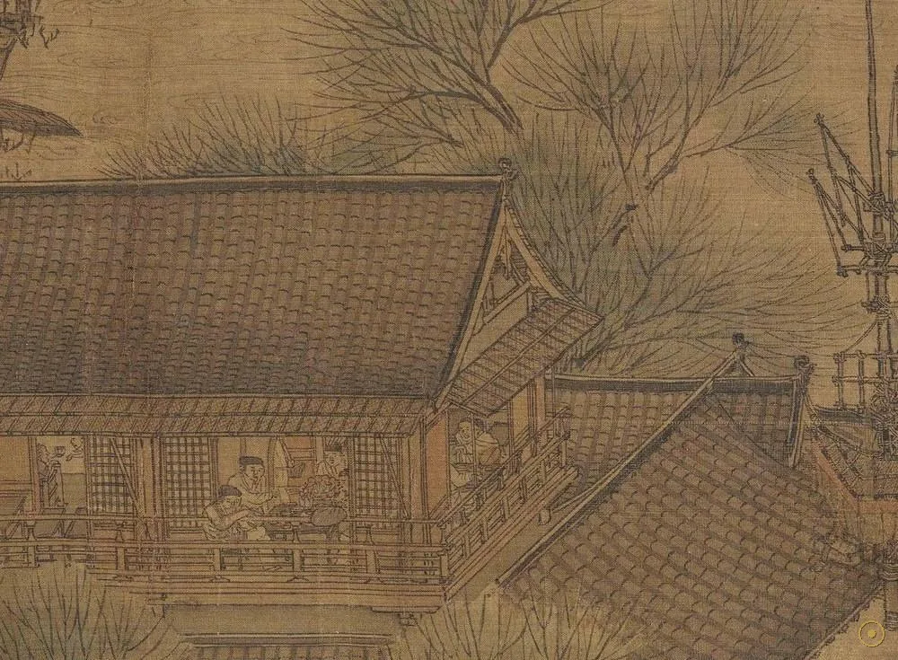
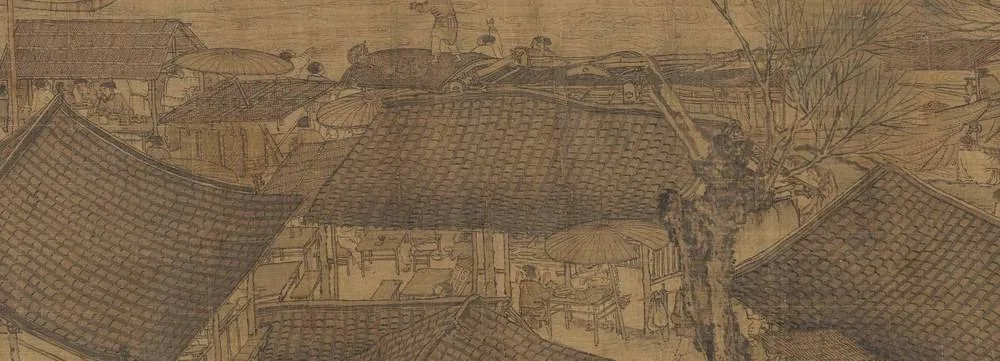
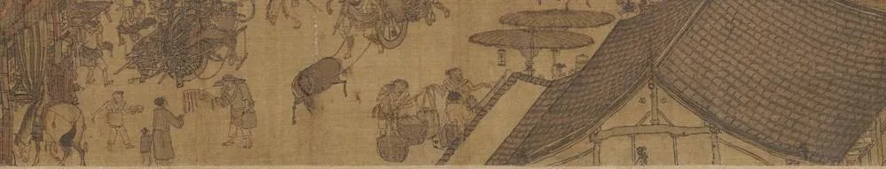

它没有主角，没有事件，却画下了整整一座城在清晨醒来时的喧嚣——这是中国长卷最迷人的野心。
《清明上河图》为北宋画家张择端所作，绢本设色，纵 24.8 厘米、横约 528 厘米（一说 528.7 厘米），现藏北京故宫博物院。画卷本身没有作者款印，其作者身份靠卷后金人张著的一段题跋才得以确认——这是少数「靠一段跋文锁定作者」的中国名画。
它画的是北宋都城汴京（今河南开封）东角子门内外、汴河两岸的市井百态。全卷约绘人物五百至八百、牲畜近百、房舍百余、舟船约二十余艘。没有中心事件，没有主角，只有从城郊到城内、由清晨到日间的连续日常生活——这种「散点透视」的长卷叙事，是中国画独有的时间-空间并置。
所以这一页不替你认定它画的是哪一个节日，只带你走近它：先放大最著名的虹桥一段，点开画面上的 ✦ 光点，去看木拱怎么不用一根钉子、桥上的人为何挤作一团、桥下的船为何命悬一线；再巡览全卷的三段——城郊、虹桥汴河、城门内街市。
—— 卷首有宋徽宗瘦金体题签「清明上河图」（相传）；作者身份依金人张著跋文（学界主流）
它画的不是某一个节日，而是一个王朝在太平年景里，最松弛、也最危险的那个瞬间。
从木拱到船工：每一处，都是北宋市井的一次呼吸。

点击画面中的 ✦ 光点 查看虹桥一段的细节 · 图片来源：Wikimedia Commons（公有领域）
从北宋汴京的一个清晨，到 1958 年重归故宫——它的命运，比画面更跌宕。
约 12 世纪初 · 汴京 · 创作
张择端生卒不详，活动于北宋徽宗朝，供职翰林图画院。他舍弃帝王与战争，把汴京的市井画成长卷——船、桥、摊、人，平淡得近乎「没有主题」。正是这种「无主角」，让这幅画成了北宋日常最完整的视觉档案。
➤1127 之后 · 流散
靖康之变后汴京沦陷，此卷流落金朝；元代入内府；明代经严嵩父子、冯保等收藏；清乾隆朝入内府，编入《石渠宝笈三编》；清末溥仪以赏赐名义将其携出宫。每一次易主，都是一次存亡之险。
➤1958 · 回家
辗转流离后，1958 年由国家拨交故宫博物院，成为故宫镇院之宝之一。此后虽屡有仿本（明仇英本、清院本等逾百本），但真本独此一卷——八百年颠沛，终得安放。

作者靠一段跋文确认。画卷本身无款印；卷后金人张著题跋写道「翰林张择端，字正道，东武人也……」正是这段约八十字的跋，把作者之名传了下来（学界主流定论）。
它险些随王朝一起消失。靖康之变后汴京沦陷，此卷流落北方；此后八百年数易其主——严嵩、冯保、毕沅、溥仪……每一次易主都是一次存亡之险，能够完好传世近乎奇迹。
仿本比真本还多。因太受欢迎，明、清两代出现大量摹本与再创作，仅知名者便有仇英本、清院本等逾百本；它们共同说明：这幅画从一开始就不只是一件作品，而是一种「关于繁华的记忆」。
※ 关于「清明」是否指节令、是否暗含政治讽喻，学界至今争论（见语境）。画卷在抗战期间曾南迁避敌，其颠沛与国运相系，亦为史实。
从城郊的枯柳，到城内的街市：长卷用三段，讲完一座城的清晨。

卷首的枯柳点出时令，也把视线从乡野引向城市。

密集的桅杆说明汴河上船只首尾相接，漕运之盛可见一斑。

连通江淮的汴河，是北宋都城的生命线，每年漕粮数百万石经此北上。

正穿过虹桥的那艘客船，是全画最紧张的瞬间。

满载的漕船靠纤夫在岸上拉行，是漕运最辛苦的一环。

临河酒肆与店铺鳞次栉比，招牌隐约可辨。

城内屋宇连绵，飞檐勾勒出北宋城市的剪影。

进城之后的街市更加熙攘，车马行人填满了路面。
中国画不依赖单一灭点，而用「散点」或「移动视点」把不同时间、不同地点并置在一卷之上；观者需边展边看，像在画中行走。《清明上河图》是这一传统的巅峰——它把「走」这件事，直接画进了结构里。
宋代取消了唐代的坊市制与宵禁，商铺临街、夜市兴盛、瓦舍勾栏遍地的市民社会由此诞生。画中那种「随便在哪都能做买卖」的自由，正是这场革命的缩影：城市，第一次真正属于普通人。
「清明」历来两说——一指节令（清明前后），二指「政治清明、太平盛世」（含有讽喻）。宋徽宗题签、张著跋文均未明言；两种读法都有证据也有漏洞，不必急着替它下结论。
它自问世便被反复临摹，仇英本、清院本等逾百；20 世纪以来更成为「中国城市记忆」的符号，频繁出现在教材、影视与设计中——一幅画，就这样长成了一种文化原型。
张择端于北宋徽宗朝绘成此卷，绢本设色，纵 24.8 厘米、横约 528 厘米，卷首有瘦金体题签（相传为徽宗）。
靖康之变，汴京沦陷，此卷流落金朝，自此踏上八百年颠沛之路。
经严嵩、冯保、毕沅等递藏；清乾隆朝入内府，编入《石渠宝笈三编》。
溥仪以赏赐名义携出宫，辗转流离；1958 年由国家拨交故宫博物院。
作为故宫镇院之宝之一陈列展示，仿本逾百，成为「中国城市记忆」的文化原型。